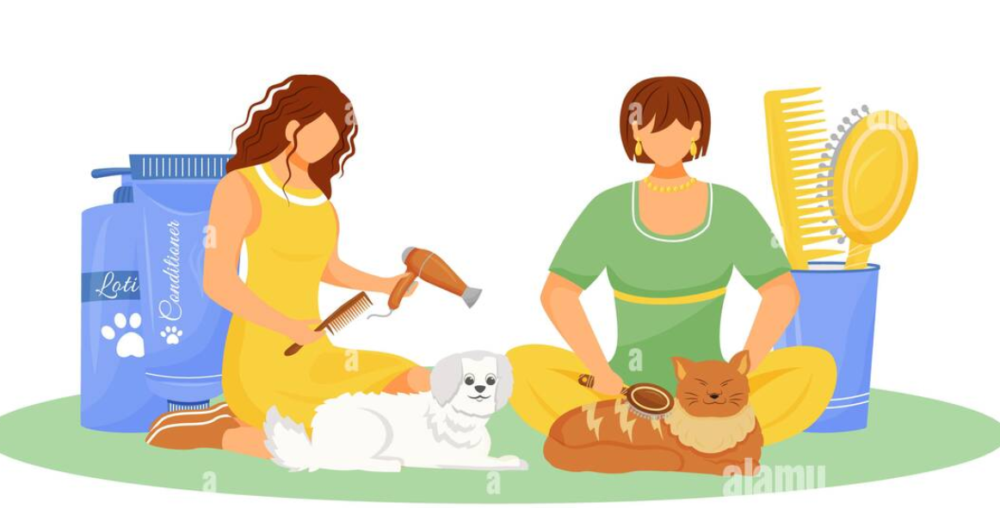

"En nuestra tienda de mascotas, entendemos la importancia de mantener a tus adorables compañeros limpios y saludables. Por eso, ofrecemos una amplia gama de productos de higiene de alta calidad diseñados para mantener a tus mascotas frescas y felices. Desde champús suaves y acondicionadores hasta cepillos y productos de cuidado dental, tenemos todo lo que necesitas para mantener a tus amigos peludos con un pelaje brillante y una sonrisa saludable. Nuestros productos de higiene están cuidadosamente seleccionados para garantizar la comodidad y seguridad de tus mascotas, para que puedas cuidar de ellos con confianza y cariño."
